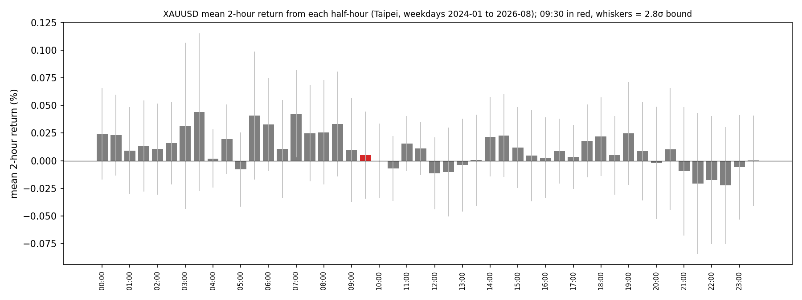

RS-XAUUSD-20261020-002 · XAUUSD · 2026-10-20
Gold does not fall from 09:30 Taipei: the 2-hour return is +0.08 points on 675 weekdays, and Asian-morning S1 longs won more often than other S1, not less
黃金在台北時間 09:30 之後是否傾向下跌？亞盤早上出現 S1 之後是否更明顯，反手做空是否有利？
Headline Metrics 關鍵數字
675
days
0.08
ret 0930 2h mean pts
46.67
ret 0930 2h share negative %
20
rank 0930 of 48
64.71
morning s1 win rate %
54.87
other s1 win rate %
Key Findings 重點發現
09:30 是很普通的半小時
2024-01 到 2026-08 共 675 個交易日，從 09:30 開盤起算 2 小時平均 +0.08 點（+0.005%，門檻 ±0.039%），下跌的日子只有 46.7%，不到一半。48 個半小時起點裡，09:30 排第 20。1 小時、4 小時也是小漲；09:00–09:30 持平。
亞盤早上的 S1 多單反而贏得比較多
07:00–09:29 進場的 S1 有 51 筆，勝率 64.7%（平均 +32 美元），其他 421 筆 54.9%（+17 美元）——方向和說法相反，而且也在雜訊內（差 9.8、門檻 20.6）。
早上有 S1 的日子，接下來 2 小時是擲銅板
51 個早上有 S1 的日子，09:30 到 11:30 平均 −3.7 點，但中位數 +0.5 點，下跌的日子 49%；平均值是少數幾天大跌拉出來的。09:30 放空，未計成本只有 49% 的日子賺錢。
實盤：早上 3 筆 S1，全部停損
8/17 以來，帳本裡 07:00–09:29 的 S1 有 3 筆（8/25、9/22、10/19，都是 07:00），策略都打到停損。這可能就是「亞盤 S1 會跌」印象的來源，但 3 筆不是樣本。
Chart 圖表


詮釋與實務意義
「九點半開始跌」在 675 天的資料裡看不到；早上的 S1 多單在回測裡反而比較好。實盤 3 筆都停損，很可能是這個印象的來源，但 3 筆不夠。不要用這個理由反手做空；亞盤早上的 S1 照一般 S1 判斷。
限制與注意事項
- 回測資料到 2026-08-15；之後 3 筆早上的實盤訊號只列出，不檢定。
- 報酬用 30 分 K 開盤到開盤，未計點差與成本。
- 時段用台北時間，沒有分開美國夏令時間的影響。